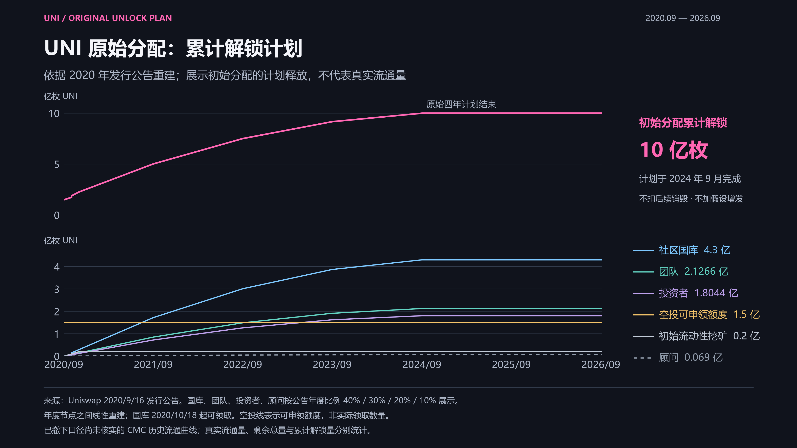
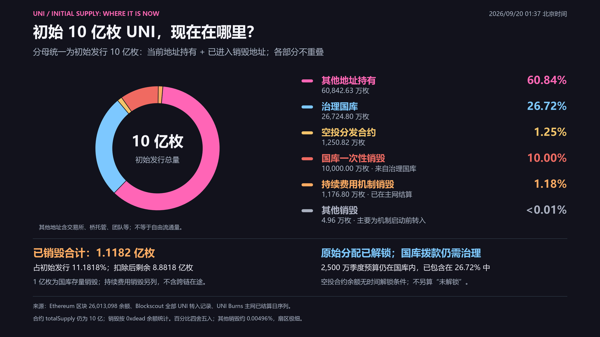
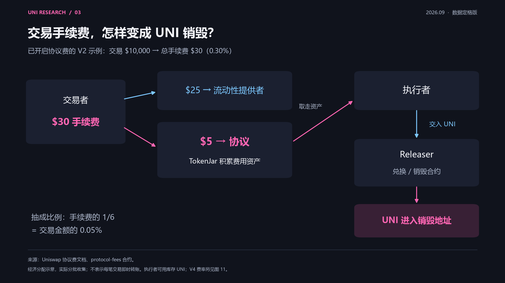
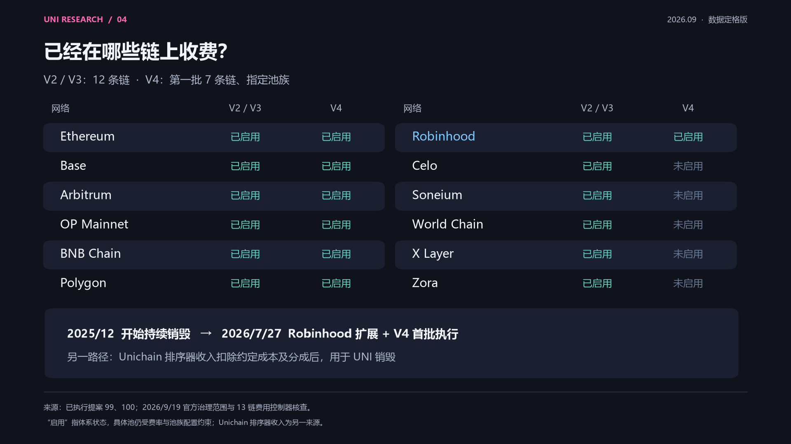
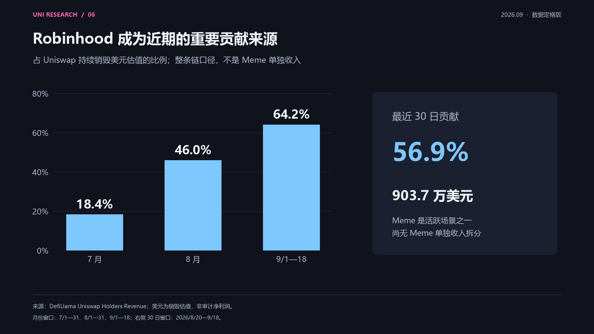
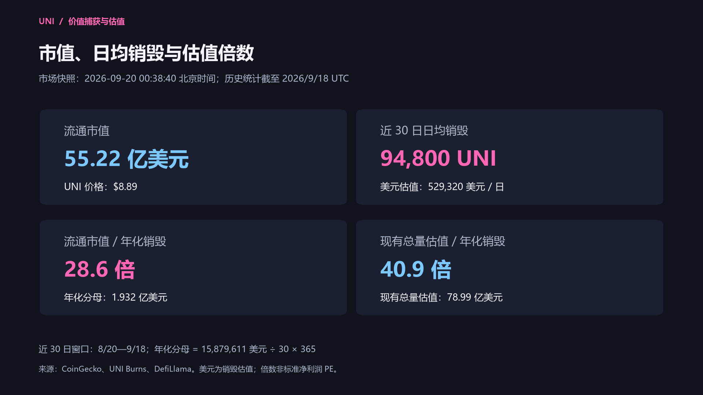
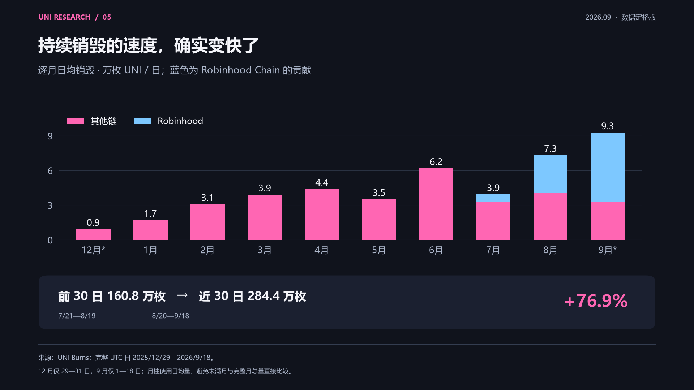

UNI 价值捕获研究：从协议收入到代币销毁
UNI 的价值捕获，正在从治理权延伸至协议收入驱动的代币销毁。多链收费开关的扩展，以及 Robinhood Chain 近期增长的交易活动，使交易收入与 UNI 供给之间的联系更加直接。
理解这一变化，需要同时观察收入和供给：哪些交易已经向协议付费，费用如何转化为销毁，国库还持有多少 UNI，以及近期销毁规模对应怎样的估值倍数。近 30 日日均销毁约 9.48 万枚 UNI；Robinhood Chain 贡献了同期约 56.9% 的销毁美元估值；按这一窗口年化，流通市值对应的回购销毁倍数约为 28.6 倍。
研究截至 2026 年 9 月 20 日。 历史数据覆盖 2025-12-29 至 2026-09-18，共 264 个完整 UTC 日；价格与市值快照为 2026-09-20 00:38:40（北京时间）。持仓与销毁分布采用 Ethereum 区块 26,013,098，即北京时间 2026-09-20 01:37:35。各项指标按其统计区间比较，具体定义见文末。
代币经济学：发行、供给与价值捕获
初始发行与分配
UNI 于 2020 年 9 月 16 日推出，初始铸造 10 亿枚。社区合计 60%，团队、投资者与顾问合计 40%。
| 初始分配 | 占初始供应 | UNI 数量 |
|---|---|---|
| 社区国库 | 43% | 4.30 亿 |
| 历史用户与 LP 等空投 | 15% | 1.50 亿 |
| 初始流动性挖矿 | 2% | 2,000 万 |
| 团队及未来员工 | 21.266% | 2.1266 亿 |
| 投资者 | 18.044% | 1.8044 亿 |
| 顾问 | 0.69% | 690 万 |
| 合计 | 100% | 10 亿 |
初始分配不等于当前持仓结构。原始安排包含四年释放期；即使该安排结束，国库仍可拨款并将存量代币转入市场。来源：发行公告。
原始解锁计划与流通供应

- 累计计划解锁： 图中上半部分展示初始分配的累计解锁计划，下半部分分别展示社区国库、团队、投资者、顾问、空投可申领额度与初始流动性挖矿。原始四年计划于 2024 年 9 月结束，合计 10 亿枚；计划线不扣后续销毁，也不代表当前流通量。
- 历史流通量的可比性： CMC 快照从 2023-02-26 的约 7.622 亿枚，降到 2023-03-26 的约 5.775 亿枚，下降约 24.2%；同一来源的总量字段均为 10 亿。这两次快照之间缺少可核实的地址分类调整或资金变动解释，尚不足以据此重建同口径的历史流通曲线。
- 解锁量、流通量与剩余总量： 累计解锁量按既定计划累计；自由流通量还受国库、团队等排除地址及其余额影响，本身可以下降；剩余总量则应按铸造和销毁核对。上图描述原始释放安排，不代表自由流通量的历史变化。
来源：发行公告与原始释放图、CMC 2023-02-26 快照、CMC 2023-03-26 快照、CMC 供应量定义。下载：4K PNG · 1080P PNG · SVG · 解锁计划计算方法 · 历史流通量口径说明。
{kind=link}
{kind=link}
{kind=link}
初始 10 亿枚的当前去向：现有持仓与已销毁

饼图以初始发行的 10 亿枚 UNI 为分母，同时展示现有持仓与已销毁数量。 快照为北京时间 2026-09-20 01:37:35，Ethereum 区块 26,013,098。各类别互斥，合计 10 亿枚。
| 当前去向 | UNI 数量 | 占初始发行 |
|---|---|---|
| 其他地址持有 | 608,426,260.730699 | 60.8426% |
| 治理国库 | 267,247,996.305835 | 26.7248% |
| 空投分发合约 | 12,508,161.879776 | 1.2508% |
| 国库一次性销毁 | 100,000,000.000000 | 10.0000% |
| 持续费用机制销毁 | 11,768,000.000000 | 1.1768% |
| 其他销毁 | 49,581.083690 | 0.0050% |
销毁来源： 1 亿枚由治理国库直接销毁，没有市场购币；持续费用机制已在主网结算 1,176.80 万枚。另有约 4.96 万枚其他销毁，主要在机制启动前已进入销毁地址，不归入费用回购。三者合计 1.1182 亿枚，占初始发行 11.1818%；扣除后剩余 8.8818 亿枚。合约 totalSupply() 本身仍返回 10 亿。
链上结算口径： 全历史 4,481 条 UNI 转入记录合计与销毁地址余额精确相等；持续费用金额的 265 个 UTC 日与 UNI Burns 主网已结算序列逐日一致。历史日序列统计各链已触发的销毁流程，包含跨链在途数量；饼图仅使用主网已结算数字。
原始解锁与后续国库预算： 原始四年分配计划已结束；当前国库仍有 2,500 万 UNI 季度预算待领取，每季度 500 万，下一期 2026-10-01，已包含在国库 26.72% 中。空投合约约 1,250.82 万枚没有时间解锁条件，仅标为合约余额，不等于逐笔确认过的有效未领取权利。其他地址不等于自由流通量，跨链映射币不重复计数。
1 亿枚的来源与日期： 治理国库 Timelock → 0xdead，提案 93 执行于 2025-12-27 20:33:11 UTC，即北京时间 2025-12-28 04:33:11。相当于初始发行的 10%、原始国库 4.3 亿配额的 23.26%，没有按比例扣减团队或投资者钱包。
来源：执行交易、提案 93、UNI Burns、余额与历史转入核对。下载：4K PNG · 1080P PNG · SVG · 分类数据。
{kind=link}
{kind=link}
{kind=link}
从发行到持续销毁的时间线
| 时间 / 阶段 | 已确认事项 | 与 UNI 的关系 |
|---|---|---|
| 2020-09-16 | 发行 UNI | 初始功能以协议治理为主 |
| 2025-12-27 UTC（北京时间 12-28） | UNIfication 提案 #93 执行 | 一次性销毁 1 亿枚国库 UNI；Ethereum V2 与选定 V3 池启用协议费；授权持续收入兑换销毁体系 |
| 2025-12-29 起 | UNI Burns 日序列开始记录持续销毁 | 统计起点晚于治理执行时点 |
| 2026-03-07 / 03-08 | #94、#95 分批执行 | 扩展多链 V2/V3 收费，并更新 V3 费档适配器；Celo 当时存在执行问题 |
| 2026-06-01 | #96 执行 | BNB Chain、Polygon 扩展；修正并完成 Celo 的跨链收费开关操作 |
| 2026-07-27 | #99、#100 执行 | Robinhood Chain V2/V3 启用；V4 第一批 7 条链启用 |
#93 的日期采用执行交易的区块时间，其他日期采用治理门户记录。跨链执行、池配置生效、收入收集和首次销毁之间可能存在时间差。来源：提案 93 执行交易、提案 93、94、95、96、99、100。
累计销毁：国库处置与持续费用机制
| 项目 | UNI 数量 | 占初始 10 亿枚 | 性质 |
|---|---|---|---|
| 一次性国库销毁 | 100,000,000 | 10.000% | 2025 年底将已有国库代币转入销毁地址，无新增市场买入 |
| 持续费用机制已触发 | 12,070,000 | 1.207% | 2025/12/29—2026/9/18 累计，含跨链待结算 |
| 两项合计（含待结算） | 112,070,000 | 11.207% | 国库处置与持续费用机制的合计，并非全部来自市场回购 |
持续机制的统计包含源链已触发、以太坊主网尚待结算的部分，因此高于上文饼图中的主网已结算数量。完整日累计为 1,207 万枚；9 月 19 日进行中快照约为 1,208.8 万枚，未纳入完整日汇总。来源：UNI Burns、一次性销毁执行内容。
当前赋能与费用转换路径
| 项目 | 当前机制 |
|---|---|
| 治理 | UNI 可委托或投票，影响协议费参数、国库拨款及相关治理事项 |
| 协议收入驱动销毁 | 部分协议收入兑换成 UNI，进入销毁流程，减少可用供应 |
| 直接分红 | 当前机制不向每个 UNI 钱包自动发放现金或手续费 |
| Unichain 贡献 | 排序器收入扣除 L1 数据成本与约定的 Optimism 15% 分配后，进入销毁机制 |
| Gas 用途 | Unichain 使用 ETH 支付原生 Gas |
机制关系：交易活动 → 已启用池的协议费 → TokenJar 累积费用资产 → 执行者交付 UNI、取走费用资产 → UNI 进入销毁流程。
这通常被称为“回购销毁”，更准确的经济动作是“协议收入兑换 UNI 并销毁”。执行者可使用市场买入的 UNI，也可使用库存；不存在固定每天同一时刻由项目方执行的美元买单。来源：协议费文档、合约仓库、UNIfication。

不同链的收费开关
截至 2026 年 9 月 19 日，V2/V3 已在 12 条链启用协议费；V4 首批覆盖其中 7 条链的获批池族。
| 链 | V2/V3 状态 | 对应治理执行阶段 | V4 状态 |
|---|---|---|---|
| Ethereum | 已启用 | #93：2025/12/27 UTC；#94 后续扩大 V3 覆盖 | 已启用，#100 首批 |
| Arbitrum One | 已启用 | #94：2026/3/7 | 已启用，#100 首批 |
| Base | 已启用 | #94：2026/3/7 | 已启用，#100 首批 |
| OP Mainnet | 已启用 | #94：2026/3/7 | 已启用，#100 首批 |
| Soneium | 已启用 | #95：2026/3/8 | 尚未启用 |
| X Layer | 已启用 | #95：2026/3/8 | 尚未启用 |
| World Chain | 已启用 | #95：2026/3/8 | 尚未启用 |
| Zora | 已启用 | #95：2026/3/8 | 尚未启用 |
| Celo | 已启用 | #96：2026/6/1 完成修正 | 尚未启用 |
| BNB Chain | 已启用 | #96：2026/6/1 | 已启用，#100 首批 |
| Polygon | 已启用 | #96：2026/6/1 | 已启用，#100 首批 |
| Robinhood Chain | 已启用 | #99：2026/7/27 | 已启用，#100 首批 |
Unichain 的排序器收入单列统计。Arc 收费扩展仍处于提案阶段，未计入已启用范围。V4 首批七链对应 #100 于 2026/7/27 的执行，其余五链尚未纳入已执行范围。
收费范围依据上述执行提案、9/18 扩链讨论和 9/19 费用控制器快照。部分概览文档更新滞后，状态以执行记录与链上配置为准。

具体抽成比例
以下费率的分母均为交易输入金额；最后一列的分母才是交易手续费。
| 版本 / 费档 | 总交易费率 | LP 所得 | 协议所得 | 协议占总手续费 |
|---|---|---|---|---|
| V2 | 0.30% | 0.25% | 0.05% | 1/6 |
| V3：0.01% 档 | 0.01% | 0.0075% | 0.0025% | 1/4 |
| V3：0.05% 档 | 0.05% | 0.0375% | 0.0125% | 1/4 |
| V3：0.30% 档 | 0.30% | 0.25% | 0.05% | 1/6 |
| V3：1% 档 | 1% | 约 0.8333% | 约 0.1667% | 1/6 |
V2 的经济分配示例：1 万美元交易产生 30 美元手续费，其中 25 美元属于 LP、5 美元属于协议。V2 实际通过协议 LP 份额等步骤收集，不是每笔即时向持有人转账。
V4 原生池采用不同的计费顺序。 协议费先扣，LP 费再对剩余输入收取。LP 参数 0.30%、协议参数 0.05% 时，合成总费率为约 0.3499%，高于 V2 示例中的 0.30% 总费率。不同池族、Hook 和动态费池受不同配置约束。来源：费用配置、V4 计算代码。
国库预算与增发权限
- 国库增长预算： 每年 2,000 万 UNI，每季度 500 万；授权两年合计 4,000 万，来自已发行国库存量。
- 治理增发权限： 两次增发至少间隔 365 天，每次不超过当时合约总供应量的 2%；不是每年自动增发 2%。截至 2026/9/19，官方文档与链上快照均未显示后续通胀铸造已发生。
- 供给口径： 转入销毁地址不会使 UNI 合约的
totalSupply()自动减少；行情平台扣除销毁后的供应、合约原始总量与流通量是三种定义。 - 流通变化： 预算授权、实际拨款和市场卖出发生在不同环节。销毁量减去年度预算，并不能直接衡量实际净供给变化。
Robinhood Chain：Meme 交易与收入贡献
新链、发币产品与收费衔接
| 日期 | 事实 | 收入联系 |
|---|---|---|
| 2026-07-01 | Robinhood Chain 主网上线，Uniswap V2/V3/V4 同期部署 | 新链交易流量进入 Uniswap；部署不等于当日已启用协议抽成 |
| 2026-07-27 | #99 与 #100 执行 | Robinhood 上的 V2/V3 及获批 V4 池进入协议费体系 |
| 2026-08-05 | Uniswap Labs 推出 Pools.trade | Meme 发币与交易产品，两种发行路径最终进入 Uniswap V4 池 |
Pools.trade 官方材料说明其面向 Meme，初始 LP 费用为 0.25%，可自动复投到锁定流动性。这笔 LP 费用不等于全部归 UNI；代币价值捕获来自符合配置的协议收费部分。
来源：Robinhood 扩链提案、Pools.trade 官方介绍。
交易活跃度与进入销毁环节的贡献
采用两个等长 30 日窗口。Robinhood 为整条链口径，不是 Meme 专属口径。
| 指标 | 前 30 日：7/21—8/19 | 近 30 日：8/20—9/18 |
|---|---|---|
| Robinhood 全链 DEX 交易量 | 138.45 亿美元 | 412.81 亿美元 |
| Robinhood 上 Uniswap 交易量 | 125.40 亿美元 | 325.93 亿美元 |
| Uniswap 占该链 DEX 交易量 | 90.6% | 79.0% |
| 归因该链的 UNI 持续销毁 | 73.6 万枚 | 154.6 万枚 |
| 该链贡献的销毁美元估值 | 279.87 万美元 | 903.68 万美元 |
| 占全 Uniswap 销毁美元估值 | 47.8% | 56.9% |
近 30 日，Robinhood Chain 贡献的收入中，约 903.7 万美元最终体现为 UNI 销毁估值，日均约 30.12 万美元，占 Uniswap 同期约 56.9%。 这衡量已进入销毁环节的价值；不是 Robinhood 公司净利润，也不是链上全部用户支付的手续费。
来源：Uniswap 交易量、Robinhood 全链 DEX 交易量、Uniswap Holders Revenue、UNI Burns。
贡献占比的变化
| 统计期间 | Robinhood 销毁美元估值 | 占全 Uniswap 同期比例 |
|---|---|---|
| 2026 年 7 月 | 80.59 万美元 | 18.4% |
| 2026 年 8 月 | 408.71 万美元 | 46.0% |
| 2026 年 9 月 1—18 日 | 694.25 万美元 | 64.2% |
| 最近 30 日：8/20—9/18 | 903.68 万美元 | 56.9% |
两个 30 日窗口相比，Uniswap 全部销毁增加 123.6 万枚，其中 Robinhood 增加 81 万枚，贡献新增枚数的 65.5%；按美元销毁估值计算，该链贡献新增金额的 62.2%。这些是增长贡献的拆分，不是 UNI 涨幅的因果拆分。
Robinhood Chain 已成为近期收入兑换销毁的重要来源。 Pools.trade 将 Meme 发行与 Uniswap V4 池连接起来，但现有数据尚不足以单独量化 Meme 交易的手续费及销毁贡献。全链 903.7 万美元的销毁估值包含不同类型交易，不能全部归因于 Meme。

回购销毁与估值：如何理解 28.6 倍
当前市场快照
| 指标 | 数值 | 定义 |
|---|---|---|
| 市场快照时间 | 2026-09-20 00:38:40 北京时间 | CoinGecko last_updated |
| UNI 价格 | 8.89 美元 | 来源报价，已舍入 |
| 流通数量 | 6.2093 亿枚 | 来源统计的流通供应 |
| 流通市值 | 55.22 亿美元 | 5,522,357,332 USD |
| 现有未销毁总量 | 8.8818 亿枚 | 包含国库等未计入流通的存量 |
| 现有总量估值 / 来源 FDV | 78.99 亿美元 | 7,899,160,546 USD；未模拟未来增发 |
市值采用数据源原值；表中价格经过舍入，因此与显示供应量相乘可能存在尾差。来源：CoinGecko UNI · 市场快照数据。
不同时间窗口的日均销毁
| 观察窗口 | 日数 | 窗口销毁总量（万 UNI） | 日均销毁（UNI） | 日均销毁美元估值（USD） |
|---|---|---|---|---|
| 启动以来：2025/12/29—2026/9/18 | 264 | 1,207.0 | 45,720 | 183,244 |
| 前 30 日：7/21—8/19 | 30 | 160.8 | 53,600 | 195,214 |
| 近 30 日：8/20—9/18 | 30 | 284.4 | 94,800 | 529,320 |
| 近 7 日：9/12—18 | 7 | 46.8 | 66,857 | 455,365 |
近 30 日日均销毁约 9.48 万枚 UNI，对应历史日均销毁估值约 52.93 万美元。 近 7 日则降至约 6.69 万枚、45.54 万美元/日。日均值反映所选窗口的平均速度，实际执行量会波动。
枚数与美元估值分别按各自日序列汇总。9.48 万枚乘以当前 8.89 美元得到的是按当前价格重估的金额，与历史日均美元值不同。来源：UNI Burns、DefiLlama Holders Revenue。
年化回购销毁倍数与 PE 的区别
这里采用“估值 ÷ 年化回购销毁价值”，衡量估值相对于销毁规模的倍数。 它可用于类似 PE 的比较，但分母尚未按统一净利润口径计入协议发展、团队和生态等支出，因此不等同于标准市盈率。PE 的定义取决于净利润口径，与是否发放现金分红无关。
| 计算步骤 | 算式 / 结果 |
|---|---|
| 近 30 日销毁美元估值 | 15,879,611 美元 |
| 年化销毁美元估值 | 15,879,611 ÷ 30 × 365 = 193,201,934 美元，约 1.932 亿美元 |
| 流通口径回购倍数 | 5,522,357,332 ÷ 193,201,934 = 28.6 倍 |
| 现有总量口径回购倍数 | 7,899,160,546 ÷ 193,201,934 = 40.9 倍 |
| 年化销毁价值 / 流通市值 | 3.50%；回购倍数的倒数，不是现金分红率 |
同一个市场快照，使用不同收入窗口：
| 回看窗口 | 年化销毁美元估值 | 流通市值倍数 | 现有总量估值倍数 |
|---|---|---|---|
| 近 7 日：9/12—18 | 1.662 亿 | 33.2 倍 | 47.5 倍 |
| 近 30 日：8/20—9/18 | 1.932 亿 | 28.6 倍 | 40.9 倍 |
| 启动以来：2025/12/29—2026/9/18 | 0.669 亿 | 82.6 倍 | 118.1 倍 |
年化只是将所选窗口的平均速度乘以 365。一次性国库销毁 1 亿枚不计入分母；近 30 日结果不能直接当作已实现全年收益。

最近数据变化
- 近 30 日销毁 284.4 万 UNI，较前 30 日的 160.8 万增加 76.9%。
- 同期销毁美元估值增加 171.1%，包含 UNI 自身价格变化的影响，不能全部解释为业务收入规模增长。
- 最近两个 7 日窗口：销毁 72.2 万 → 46.8 万枚，下降 35.2%；同期 9/11—9/18 UNI 收盘价上涨约 47.5%。价格与当期销毁并非同步变化。
来源为上述 UNI Burns、DefiLlama 序列，以及 Binance 日 K 数据。
增长预期：收费扩展与新增收入来源
截至 2026-09-20（北京时间），治理讨论与产品进展指向两类增长来源：扩大现有协议费的覆盖范围，以及引入新的费用渠道。不同方向所处阶段不同，产品上线之后仍需观察实际交易与收入。
这些进展能否扩大 UNI 的价值捕获，取决于新增交易是否产生协议费，以及费用是否持续进入销毁机制。
有明确治理步骤的收费扩展
| 事项 | 已确认的讨论或安排 | 当前阶段 | 需要继续验证的节点 |
|---|---|---|---|
| Arc 的 V2/V3/V4 收费 | Uniswap Labs 于 2026/9/18 发起扩链提案；原帖安排 9/18—23 进行 Snapshot，成功后再进行链上投票 | 提案／温度检查阶段；部分收费基础设施地址仍待确定 | Snapshot 结果、链上提案与执行、Arc 实际收费及首笔销毁 |
| V4 剩余五条链 | 已执行的 #100 标题为 Part 1/2，明确将 Celo、Soneium、World Chain、X Layer、Zora 留给后续提案 | 首批七链已执行，剩余五链待后续提案；截至统计日，尚无已核实的 Part 2 执行记录 | 后续提案范围、具体池族、链上收费控制器及实际收入 |
Arc 已于 9/16 支持 Uniswap 产品，但协议部署和收费开关是不同步骤。两项扩展的经济意义是扩大可收费交易范围；收入大小还取决于实际交易量、费率及流动性，链数增加不能直接等比例推算收入。
来源：Arc 治理原帖、Arc 上线公告、已执行提案 #100、治理提案列表。
聚合器 Hook：扩大可收费交易的来源
官方在 2026/3/18 宣布聚合器 Hook 首次在 Tempo 上线，将 Tempo 原生稳定币交易所的流动性接入 Uniswap V4 路由。官方当时表示将继续支持更多链和流动性来源。聚合器 Hook 已有产品落地，后续增长取决于支持范围的扩展与收费机制的落实。
#100 已为聚合器 Hook 池族设计收费规则，费用进入 TokenJar。这一设计意味着，部分通过 Uniswap 路由成交的外部流动性，也可能产生协议收入。 实际收入仍取决于各部署的收费配置；Tempo 上线本身不代表全部外部交易均已向 UNI 贡献收入，聚合器 Hook 的独立收入规模尚未核实。
来源：Tempo 上线与首个聚合器 Hook、提案 #100 的聚合器池族规则。
PFDA：协议费折扣拍卖
Protocol Fee Discount Auctions，协议费折扣拍卖，是 UNIfication 中明确提出的机制：拍卖某个地址在一段短时间内免付协议费的资格，拍卖收入用于 UNI 销毁，目标是让协议和 LP 留住一部分原本由套利与区块构建环节获取的价值。
PFDA 已列入官方路线图，正式上线时间和独立收入尚未核实。 现有依据主要是 2025 年的提案与说明，尚不足以量化新增收入。当前 28.6 倍采用已观察到的销毁金额，未另行加入 PFDA 的预测贡献。
UniswapX 也曾被列为后续费用来源，但其具体收费执行范围与独立收入尚未核实，仍属于待观察方向。
来源：UNIfication 官方路线图、Hayden 对 LP 与 PFDA 的回复、协议费架构概览。
稳定币与机构资产：从产品扩展到收入转化
| 产品方向 | 官方已披露进展 | 对未来收入的含义与边界 |
|---|---|---|
| StablePair Hook | 2026/9/10 上线，以太坊首批为 USDC/USDG、USDC/USDT，使用动态费改善 LP 的价值获取 | 可能提升稳定币交易竞争力；具体新增交易量和 UNI 收入仍需数据。该 Hook 的荷兰拍卖设计并不构成 PFDA 已上线的证据 |
| Permissioned Pools | 2026/8/24 技术说明确认标准已在以太坊主网及 Sepolia 上线，支持发行人的准入规则，适用于代币化基金等资产 | 扩大可接入的资产种类；产品可用、资产接入、成交增长、UNI 收费是不同环节，收入规模需依据实际成交和收费测算 |
上述上线进展依据官方披露。潜在收入增长属于对产品用途的推论，尚需新池交易量、收费配置和销毁数据验证。
来源：StablePair 上线公告、Permissioned Pools 技术说明。
治理讨论中的分歧：收费扩张能否持续
V4 收费讨论并非一致乐观。Panoptic 创始人 guil-lambert 担心 LP 在收益不足时承受更多抽成；Gamma Strategies 主张更谨慎地按链和竞争状况推进。Uniswap Labs 于 2026/7/18 回复称，其观察的以太坊前 25 个 V3 池以代币单位计保留约 98.5% 的原有流动性，并表示将持续监测、必要时提出费率调整。该数据是 Labs 披露的 V3 历史样本，其结论能否适用于不同链和 V4 池，仍需持续观察。
另有社区成员在 8/14 建议先覆盖安全、运营和储备需要，再用审计后的盈余销毁；UNIfication 讨论中也有人提出 UNI 质押设想。这些建议仍属社区讨论，尚无已核实的生效规则。 现有依据不足以确认 UNI 将推出分红、质押收益，或改变销毁政策。
来源：V4 收费争议与 Labs 回复、先留储备的社区建议、UNI 质押设想。
增长预期如何影响估值倍数
现有 28.6 倍采用流通市值除以近 30 日年化销毁价值。新增业务只有持续产生费用并进入 UNI 销毁，才会扩大这一分母。当前估值已经包含哪些市场预期，无法仅凭这些治理帖子量化。
估值敏感性示例： 假设流通市值维持上述快照水平，年度销毁美元价值恰好翻倍，倍数将从约 28.6 降至 14.3。市值变化、费用下降和代币美元估值变化都会改变结果；币价上涨也意味着相同美元费用能换取更少枚 UNI。
后续应重点跟踪：实际收费覆盖、分来源销毁金额、LP 留存与成交量、国库预算拨付。Robinhood 的贡献也需要观察持续性，暂时不能用其全链收入替代 Meme 专属贡献。
UNI 未来的估值判断，需要以实际收费、持续销毁和供给变化为依据。现有路线图尚未形成可核实的统一盈利或销毁数量预测，因此这些方向更适合作为收入增长的观察指标，而非一个已经确定的未来 PE。
历史数据：持续销毁的逐月变化
所有自然月均按完整 UTC 日；12 月和 9 月为部分月份。比较速度使用日均量，不直接比较部分月份与完整月份的总量。
| 月份 | 已统计日数 | 销毁总量（万 UNI） | 日均（万 UNI） | 销毁美元估值（万美元） | Robinhood 美元贡献占比 |
|---|---|---|---|---|---|
| 2025-12（12/29—31） | 3 | 2.8 | 0.93 | 16.4 | 0.0% |
| 2026-01 | 31 | 53.4 | 1.72 | 286.5 | 0.0% |
| 2026-02 | 28 | 86.4 | 3.09 | 320.9 | 0.0% |
| 2026-03 | 31 | 121.4 | 3.92 | 458.8 | 0.0% |
| 2026-04 | 30 | 132.2 | 4.41 | 450.1 | 0.0% |
| 2026-05 | 31 | 108.8 | 3.51 | 385.2 | 0.0% |
| 2026-06 | 30 | 185.8 | 6.19 | 511.6 | 0.0% |
| 2026-07 | 31 | 122.0 | 3.94 | 438.4 | 18.4% |
| 2026-08 | 31 | 227.2 | 7.33 | 888.2 | 46.0% |
| 2026-09（9/1—18） | 18 | 167.0 | 9.28 | 1,081.5 | 64.2% |

全量逐日数据、价格和各链拆分见 历史数据工作簿。估值计算见 测算数据。进行中 UTC 日仅保留快照，不进入完整日汇总。
数据口径与来源
- 统计区间： 历史交易与销毁覆盖 2025-12-29 至 2026-09-18，共 264 个完整 UTC 日。市场价格、持仓分布和治理状态分别标注快照日期，不视为同一时刻的数据。
- 数量与美元估值： UNI 枚数采用 UNI Burns；美元采用 DefiLlama Holders Revenue 的销毁估值。两套序列独立汇总，局部历史日存在差异，不构成逐笔一致的美元购币现金账，也未经全量交易逐笔独立审计。
- 已触发与已结算： 历史日序列包含各源链已触发的销毁流程；持仓分布仅计入以太坊主网已结算销毁。跨链待结算数量不提前计入饼图，国库一次性销毁不计入持续收入及年化估值分母。
- 解锁与流通： 解锁曲线按发行公告的原始四年安排重建，属于计划模型。自由流通量还受地址分类、国库存量和实际拨款影响。发行公告与后续概览文档的释放终点表述存在差异，精确到各钱包的结束日尚未独立确认。
- 收费覆盖： 链与池族范围依据治理执行记录及费用控制器快照，并非对每个池当前费率的全量扫描。#96 于 2026/6/1 完成包含 Celo 修正在内的扩展；#100 于 2026/7/27 执行 V4 首批收费。
- 未来预期： 治理讨论和产品进展更新至 2026-09-20。提案、产品上线和实际收入分别列示；产品进展依据官方披露，新增部署与各产品盈利能力未逐一独立审计。